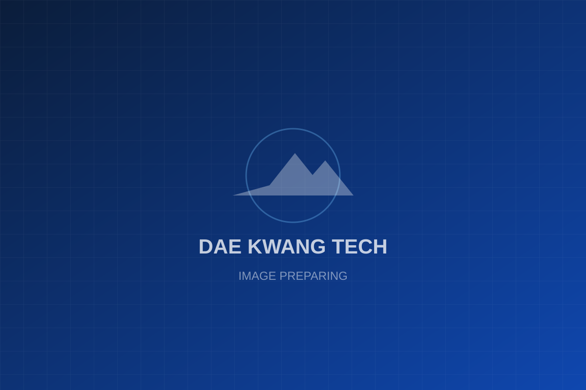

TECHNOLOGY초정밀 가공 기술
QUALITY신뢰를 만드는 품질
PROCESS체계적인 제조 프로세스
FACILITY최첨단 설비 인프라
APPLICATION다양한 산업 분야 적용

PRECISION YOUR SUCCESS
초정밀 가공 · 금속 처리 · 품질 관리까지, 완벽을 향한 우리의 기준은 타협하지 않습니다.
고정밀 CNC 가공으로 완성하는 복잡 형상 부품
표면 처리 및 열처리 기술로 내구성과 품질 향상
생산성과 정밀도를 높이는 맞춤형 지그 및 부품
신속한 제작과 유연한 대응으로 고객의 개발 단계 지원
가공부터 조립까지 원스톱 솔루션 제공
정확한 요구 파악과 기술 검토
최적의 설계와 가공 전략 수립
고정밀 장비를 통한 정밀한 가공
성능 향상을 위한 표면 및 열처리
다차원 측정으로 품질 확인
완성품의 안전한 전달
정밀 치수 및 형상 측정
고정밀 형상 및 공차 검사
표면 품질 및 가공기 분석
소재 경도 및 열처리 상태 평가
고정밀 CNC / 복합 가공기
로봇 자동화 및 무인 운영 시스템
전용 측정실 및 항온·항습 관리
청정하고 체계적인 생산 환경
체계적인 자재 및 제품 관리
정밀 가공 전문 기업으로 시작
다양한 산업의 신뢰받는 파트너
풍부한 경험과 노하우 축적
자동차, 항공우주, 반도체, 의료, 산업기계 등 다양한 산업 분야 지원